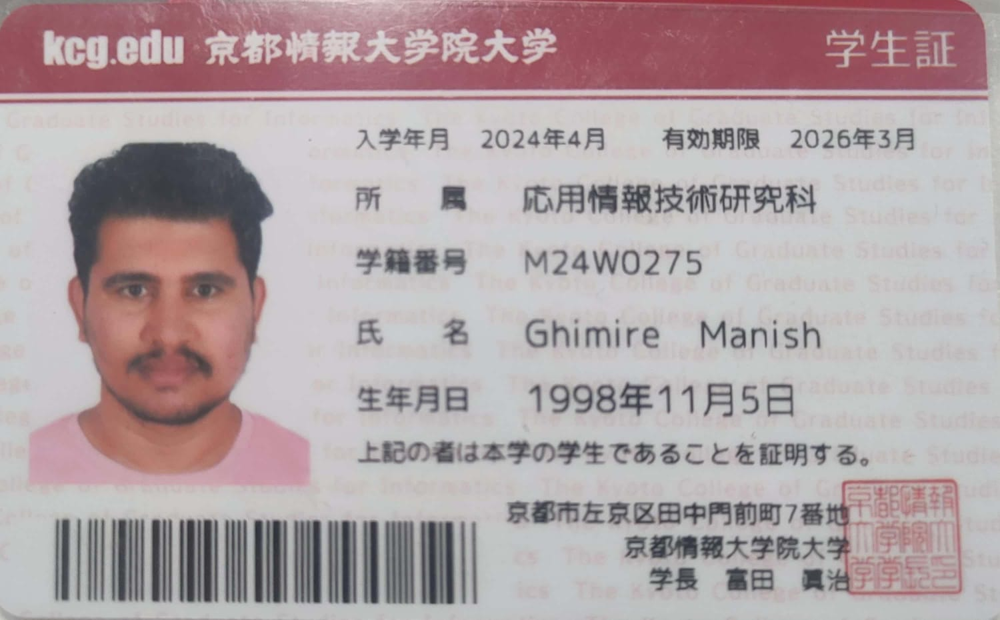

About Lists
Fovorite Sport (Unorder list)
order list
- Cricket
- Hockey
- Baseball
Structure of Family
- Grand Father
- Grand Mother
- Father
- Mother
- Uncle
- Auntie
Some of my favourite movie and their actor
- Maahan Movie
- Ra One Movie
Definition Lists
- Sashimi
- Another possibility for the name is the traditional method of harvesting. "Sashimi-grade" fish is caught by individual handline. As soon as the fish is landed, its brain is pierced with a sharp spike, and it is placed in slurried ice. This spiking is called the ikejime process, and the instantaneous death means that the fish's flesh contains a minimal amount of lactic acid. This means that the fish will keep fresh on ice for about ten days, without turning white or otherwise degrading
Sashimi
Impd rating
My Mail